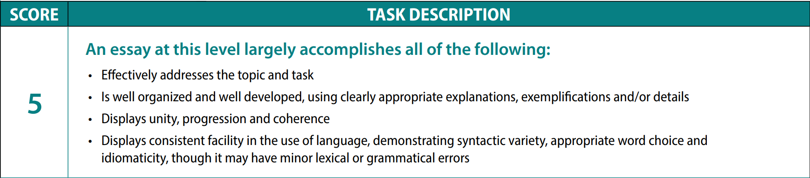

Англис тилинин деңгээлин текшерүү үчүн эл аралык тесттердин бири бул TOEFL, дүйнөдөгү көпчүлүк университеттер талап кылат. TOEFLда 4 секция бар: окуу, угуу, сүйлөө, жазуу. Эң жогорку балл: 120, башкача айтканда ар секцияда 30дан балл.
Эки жыл мурун мен IELTS тапшыргам жана 8 балл алгам. Мен башка университетке тапшыргам келген, бирок IELTSтин мөөнөтү эки жыл болгондуктан, TOEFL тапшырып көрүүнү чечтим жана 107/120 балл алдым. Бул статьяда мен өзүмдүн даярдандыгым жөнүндө кеңири айтып берем. Мен өзүмдүн усулдун жөнүндө кеңештеримди айтам жана дайындануу жөнундө материалдарды аягында калтырам.
Бул усулду талдоонун алдында бир күмүш сырга айтканым бар. Сиздин англис тилинин деңгээл Pre-Intermediate же Elementary болсо, канчалык жакшы даярданбасын 100 балдан ашык балл алууга мүмкүн эмес. Ушундай деңгээли менен сиз жогорку балл алгыңыз келсе, мен бул тестке даярдоонун алдында жакшылап англис тилинин үстүнөн иштөөгө кеңеш берем. Англис тилди үйрөнүп жатып жана тестке дагы даярданып жаткан болгондуктан, эч нерседен кабаатыр болбосо болот, жок дегенде Upper-Intermediate деңгээлин жетип тестке даярдап баштаса болот.
Ар кайсы секцияга өзүнчө арга керек. Мен сунуш кылган даярданоо ушундай: окуу менен угуу чогуу жана суйлөө менен жазуу чогуу даярдануу. Ушундай бөлгөнүмдүн себеби, окуу жана угууга толтура сыналуучу тесттери интернетте тапса болот. Структурасы боюнча чыныгы тестке окшош жана заматта натыйжасы чыгат. Жазуу менен суйлөөнүн анчалык жөнөкөй эмес, ушунун дагы интернеттен сыналуучу вариантты тапса болот, бирок буларга балоо чыкпайт жана өсүү болбойт.
Бул секциялар боюнча жогорку балл алоо үчүн, сыналуучу тест 5-6 жолу өтсө жетиштүү. Сыналуучу тестте заматта балл чыгуудан дагы жана кайсыл жерден ката кетиргениңерди көрсөтөт. Мындай даярдык ийгиликитүү болуу үчүн тесттерди кандайдыр бир тартипде өтуу зарыл.
Жазуу менен суйлөө боюнча даярдануу үчүн досунар же окутуучуңар болсо жакшы болот. Эгерде силерге кайсы жерде ката кетергиниңэрди көрсөтпөсө, дагы каталарды кайтала бересиңер. Балоо схемасыңа көңүл бурул абдан зарыл.
Өзүм 2 жуманын ичинде ар күн эки саат даярдангам. Мурун IELTS тапшырган үчүн TOEFLдын структурасыны бат түшүндүм. TOEFL IBT Home Edition деген тесттин вариантты үйдө отуруп тапшырса болот болгондуктан, ушул вариантты тапшырам деп чечтим. Экзамендын прокторлары баарын текшерет, бөлмөнү көрсөттүш керек, компьютердин ичиндегин программаларды да контроль кылат. Үйдө дуулдаган иним бар болгон, бир аз толкундадым, бирок эч нерсе болгон жок. Тестты тапшырганда да кабаатыр болгом, бирок өзүмдүн даярданган нерселерге ишенип жакшы балл алдым. Сыналуучу тесттердин баардыгын пайда бар экендигине ырааз болдум.
Мен ойлогондой интернетте жетиштүү материалдар бар жана силер өзүңөр даярдана аласыңар, эгер силер өзүңөрдү жоготуу сезими болсо анда курска жазылгыла. Бирок, окутуучуга таянбагыла, ал сиз учун даярданбайт. Силер өзүңөр материалды окуп, эгерде жогорку балл алгыңар келсе курстан тышкары сыналуучуу тесттерди тапшырып жана даярданыш керек